Inspiration
The concept of the poster is to move across borders just like how the speakers of this event are all cross disciplinary desiners. Inspirations are pulled from Wolf Gang Weigngart and David Carson's creative experimentation on typography overlays.
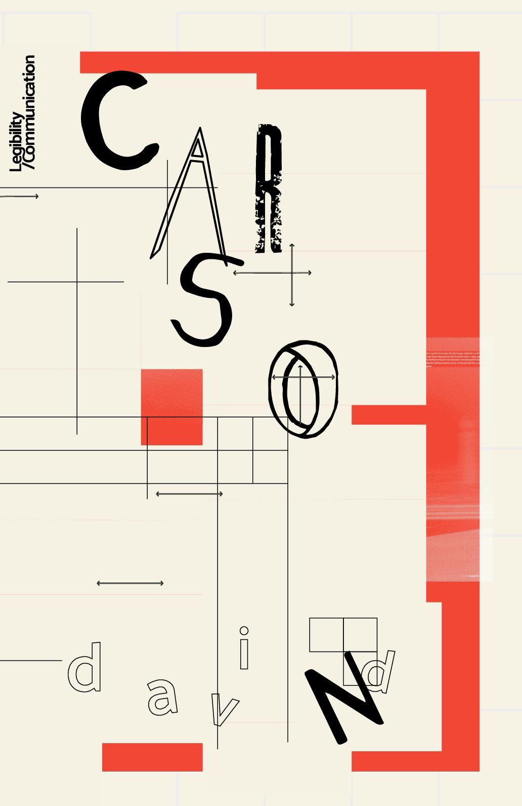Design Decisions
Apart from text overlays, I want to make sure the event information is still displayed clearly to draw audiences' attention even from distance apart. The main title uses custom fonts with dominant hierarchy to separate from the rest of the information. The animation of the text adds more cohesivness to the overall concespt and the font style. In addition, speakers are placed in diagonal line from the title to draw attention by the asymmetry of the design.

 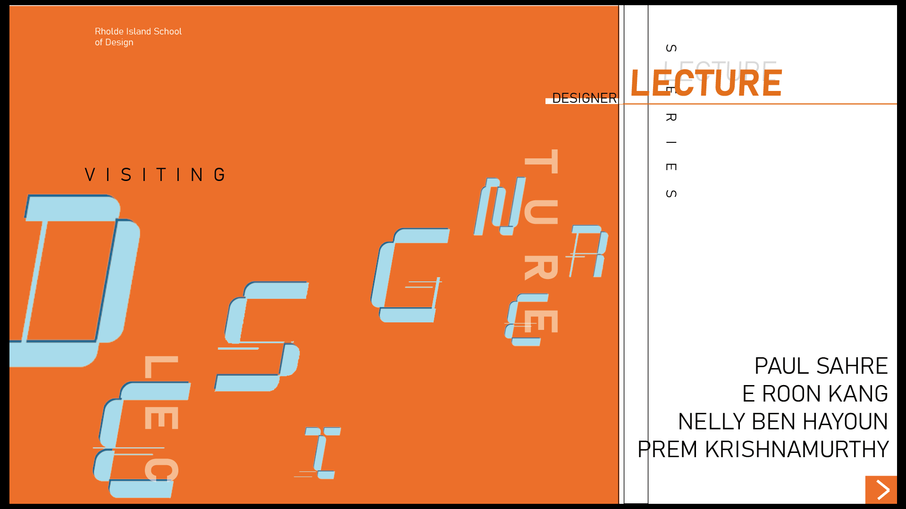
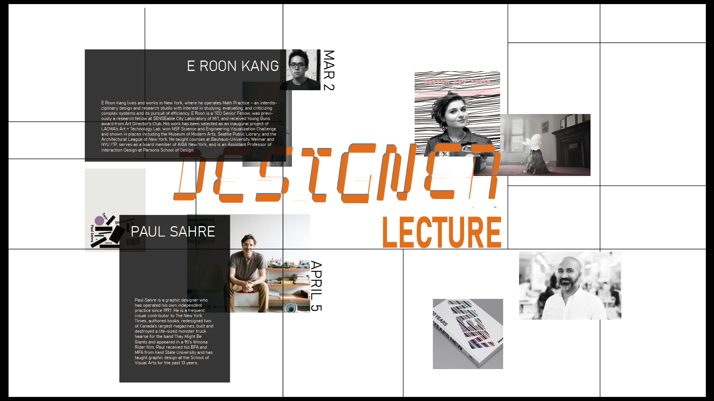
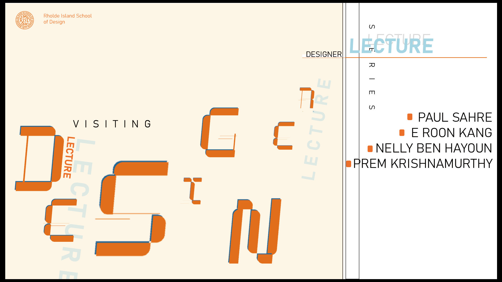
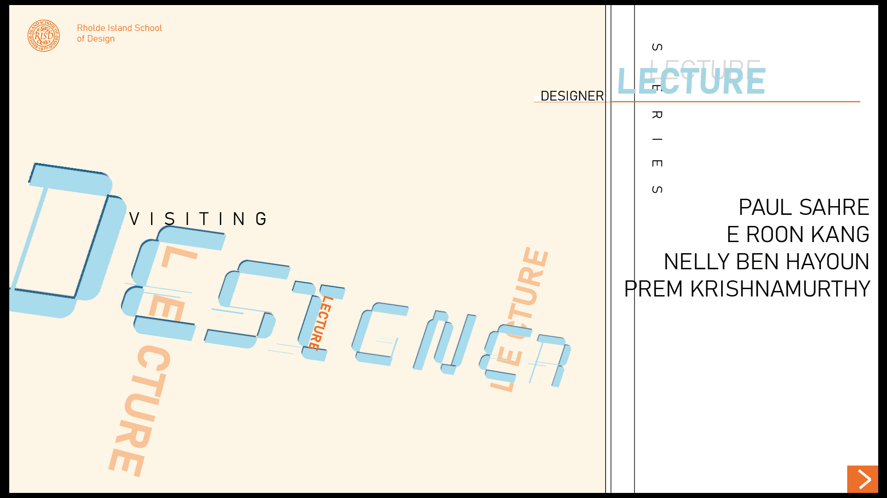
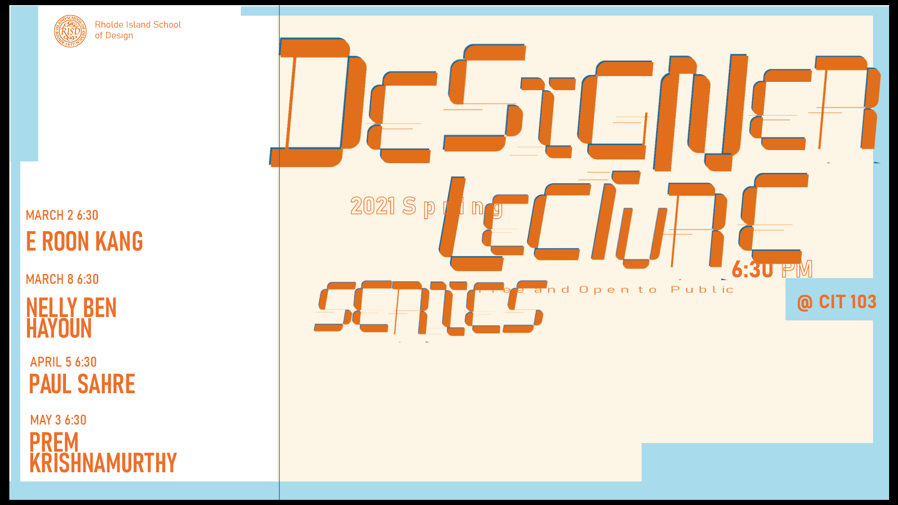
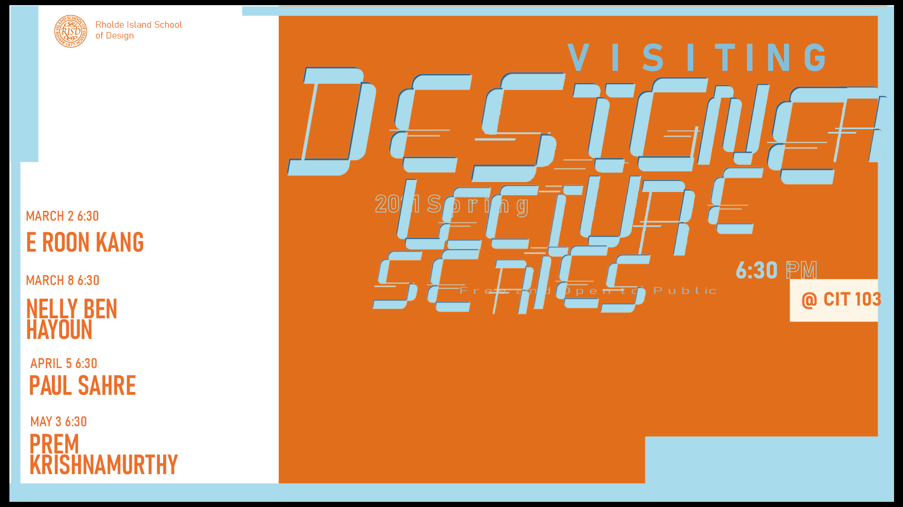
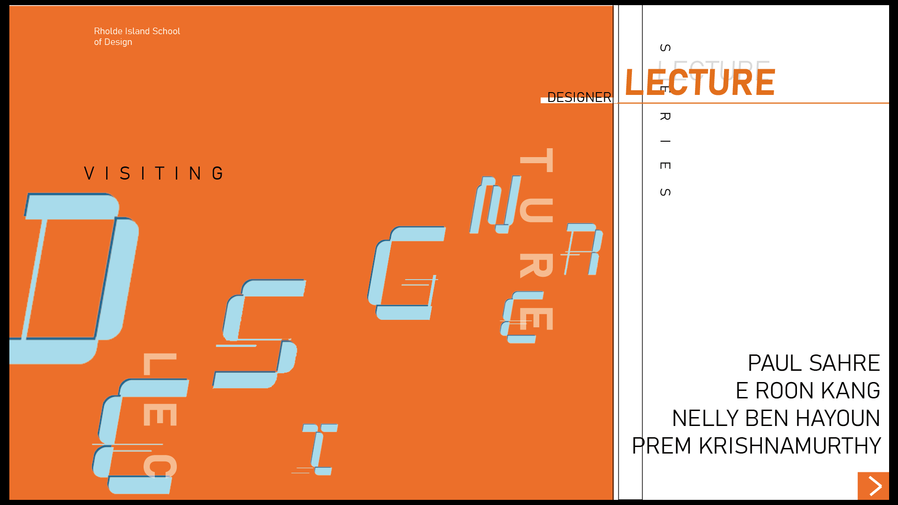
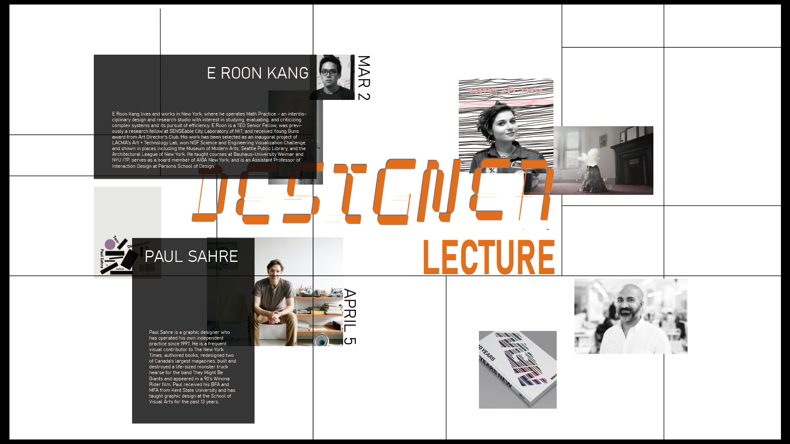
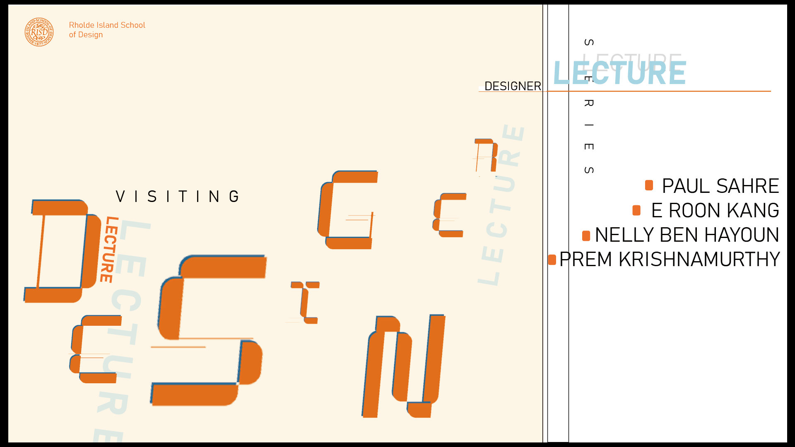
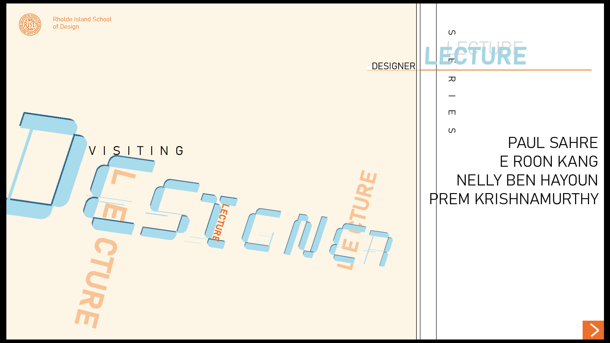
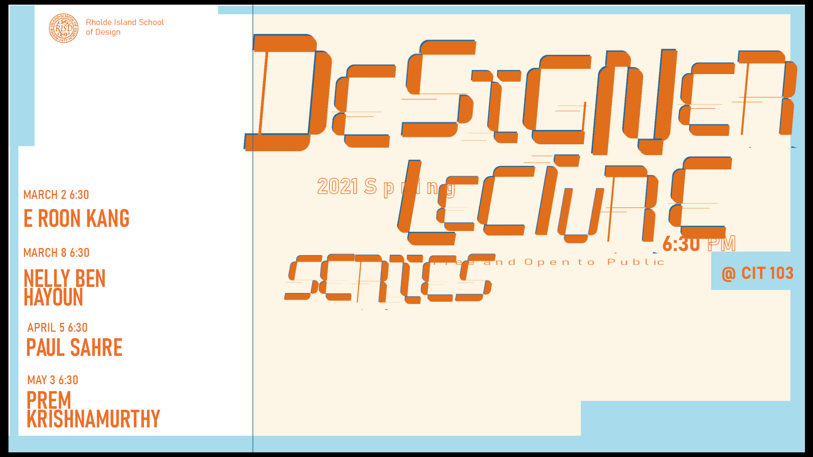
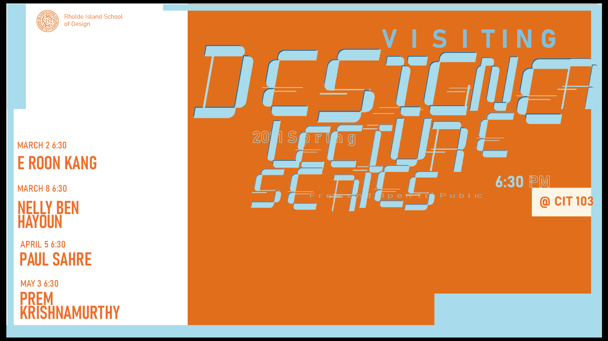